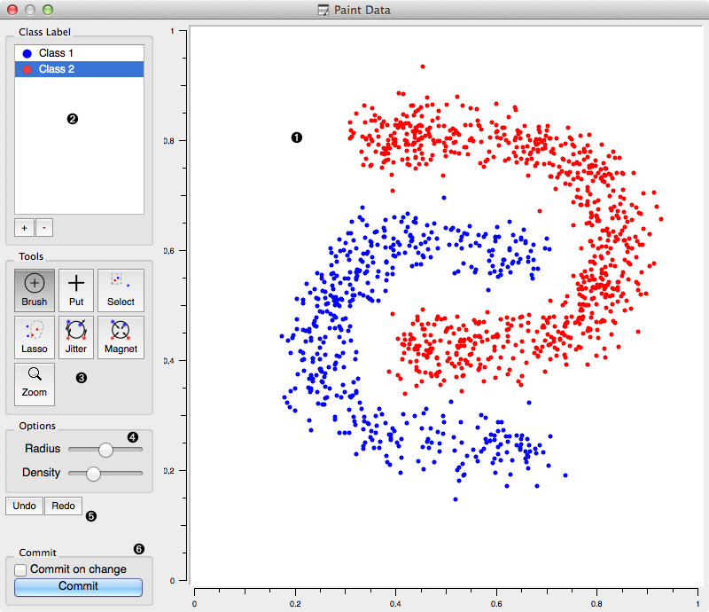
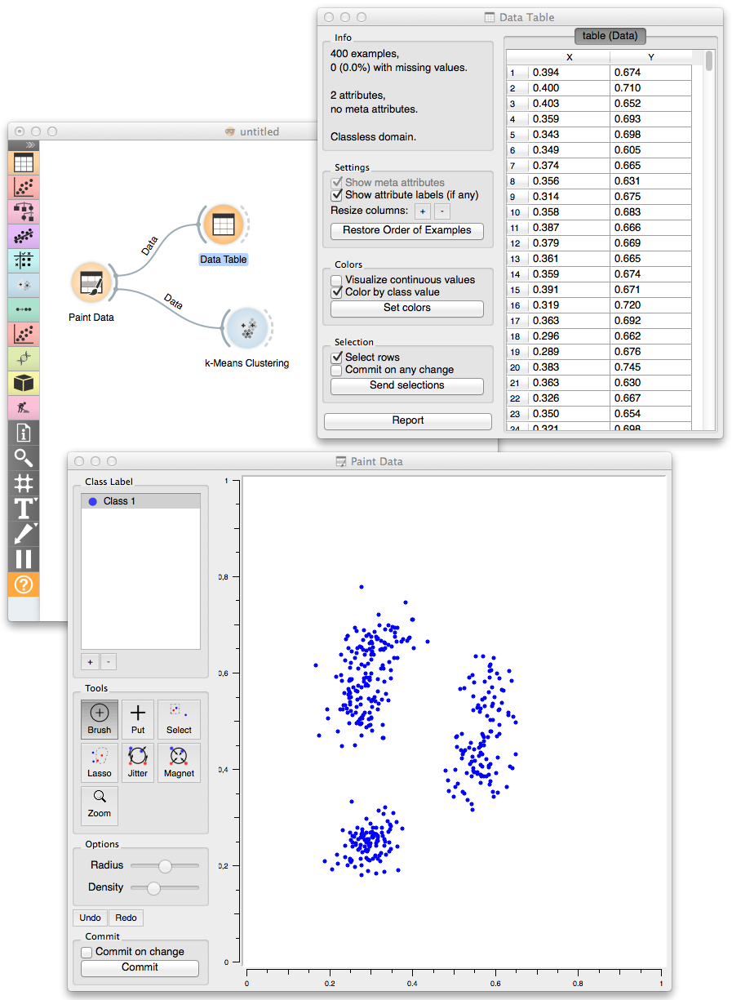

This is documentation for Orange 2.7. For the latest documentation, see Orange 3.
Paint Data¶
Paints the data on a 2D plane. Place individual data points or use brush to paint a larger data sets.
Signals¶
- Inputs:
- (None)
- Outputs:
- Data
Attribute-valued data set created in the widget.
Description¶
The widget support the creation of the new data set by visually placing the data points on the two-dimension plane. Data points can be placed on the plane individually (Put) or in a larger number by brushing (Brush). Data points can belong to classes if the data is intended to be used in supervised learning.
- A 2D drawing canvas with fixed coordinate system.
- Select the class to paint its data instances. Add or remove classes. Use one class only to create classless, unsupervised data sets.
- Drawing tools. Paint data points with Brush and Paint. Select (and then remove or relocate) them with Select or Lasso. Reposition data points with Jitter or Magnet.
- Each of the tools may have its own options shown in this box.
- Undo or redo the editing actions.
- If Commit on change is checked, the data would be sent to the output channel of the widget upon any change. This operation could be slow when data sets become large.
Example¶
In the workflow below we have painted an unsupervised (class-less) data set and sent it to Data Table and K-Means Clustering clustering widget. We have painted three clusters, which were, at least in a number of clusters correctly identified by the k-means clustering.
